SPOT est une association d'événementiel audiovisuel basée aux Herbiers. J'ai eu l'opportunité d'y participer, notamment sur la Parade de Noël, depuis maintenant deux ans et la fête est dans le bourg suite à la parade de noël l'année dernière.
Lors de cet événement, j'interviens sur l'éclairage et la sonorisation des chars, ainsi que sur certains effets du spectacle comme les machines à neige, les machines à étincelles et autres dispositifs techniques.
Sur la Parade de Noël, j'assure l'éclairage et la sonorisation des chars ainsi que la mise en œuvre des effets spéciaux : machines à neige, machines à étincelles et autres dispositifs techniques qui contribuent à l'ambiance festive de l'événement.
J'ai également participé à La Fête est dans le Bourg, une soirée de concerts qui a lieu fin mai, et à laquelle je participe encore cette année. Sur ce projet, j'ai assuré un rôle complet de régisseur son : installation du matériel, gestion du pupitrage, démontage, ainsi que les changements techniques entre les groupes.
Ces expériences m'ont permis de développer des compétences solides en technique événementielle, en autonomie et en gestion de plateau.
Parade de Noël
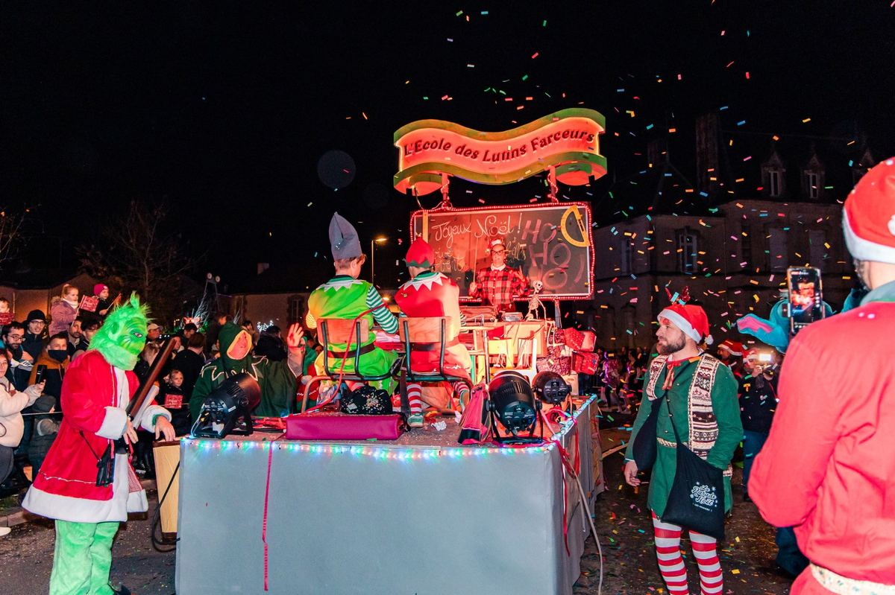
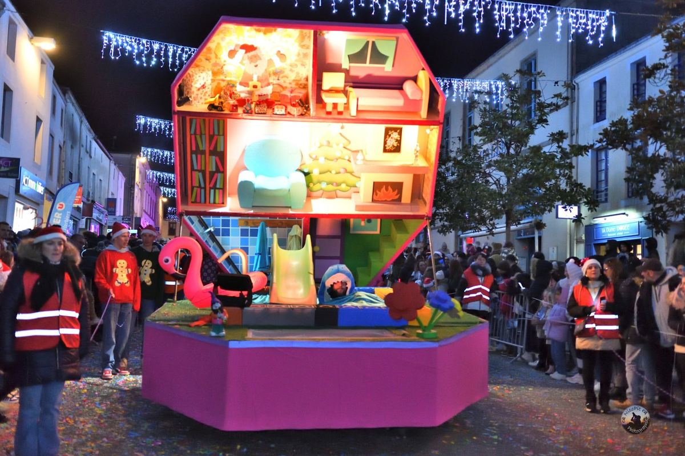
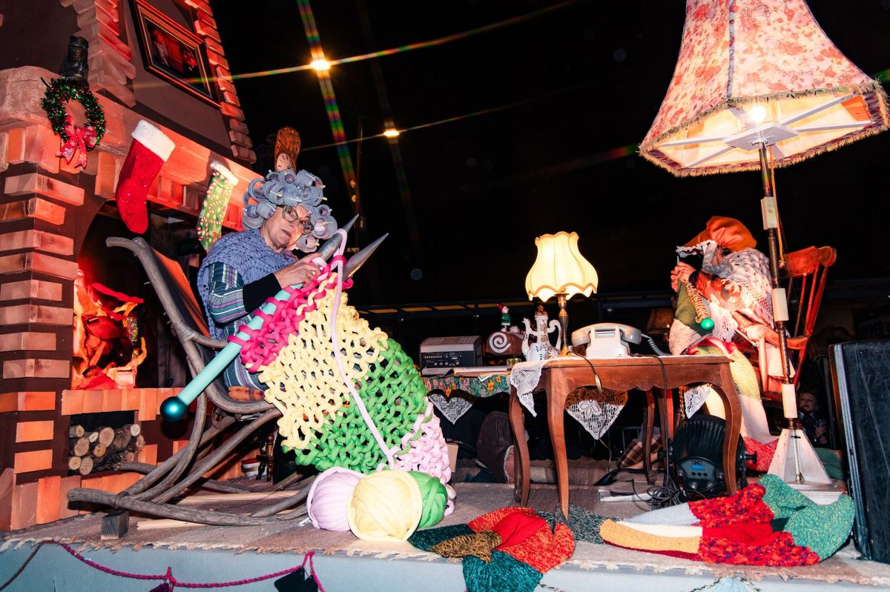
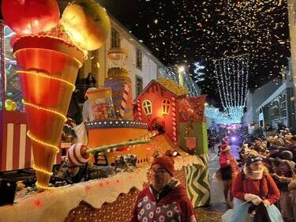
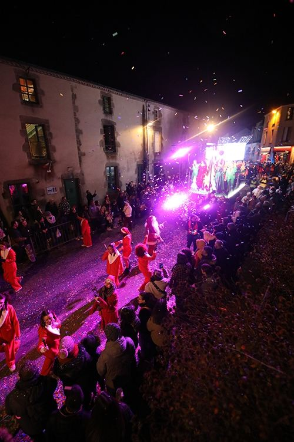
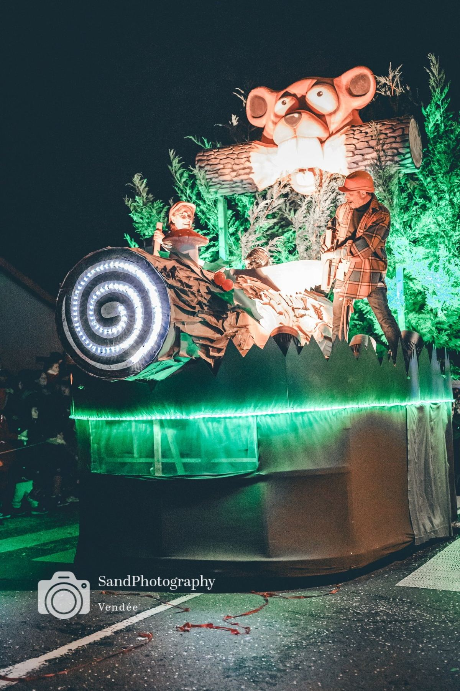
La Fête est dans le Bourg
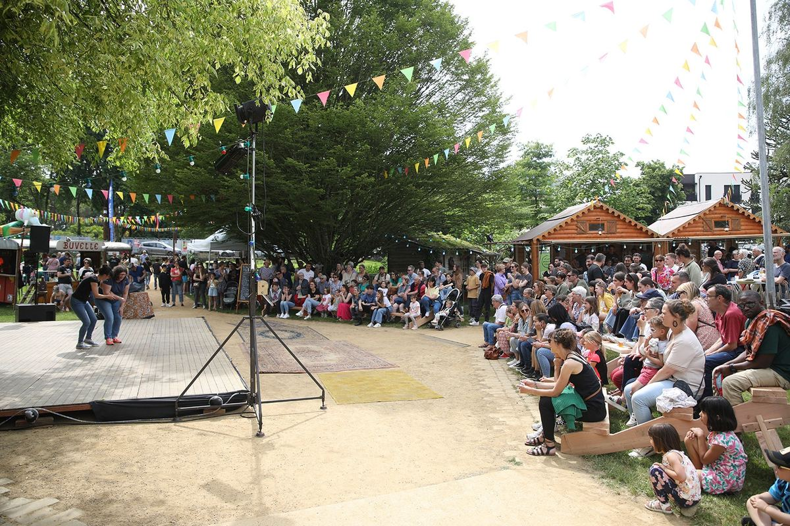
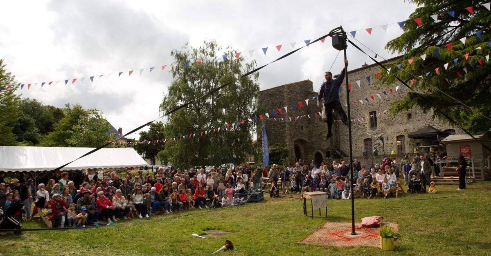
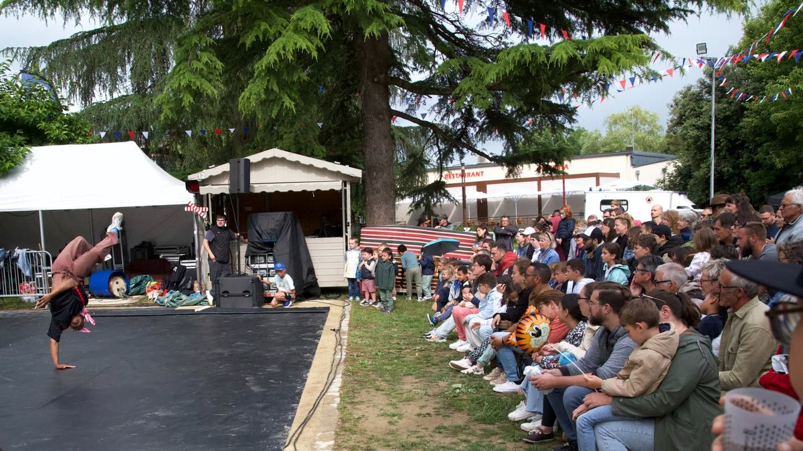
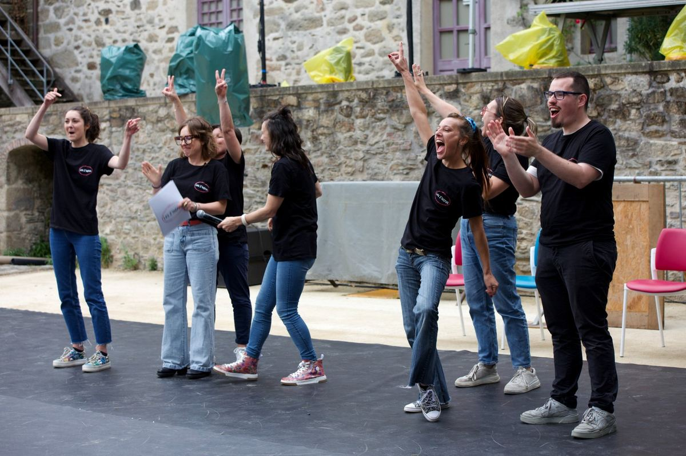
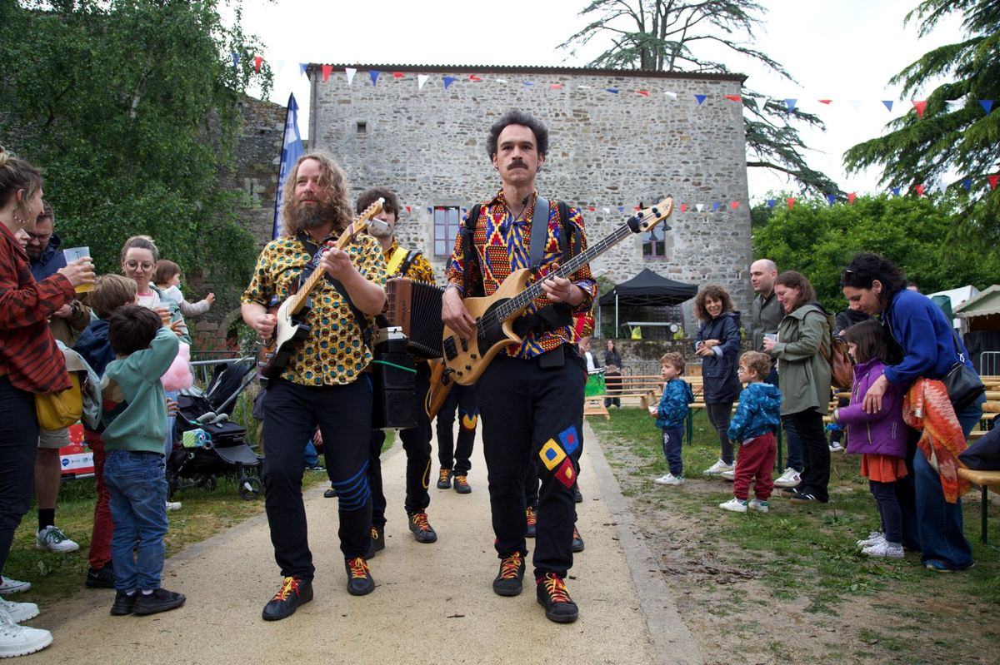
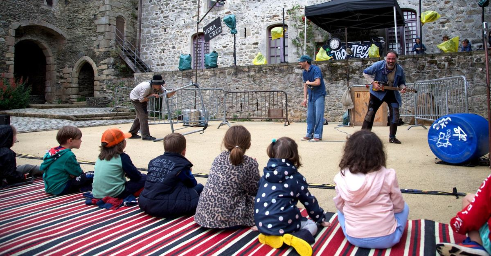